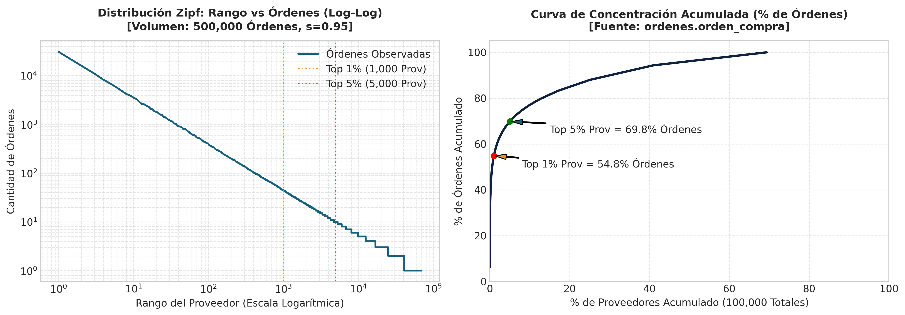
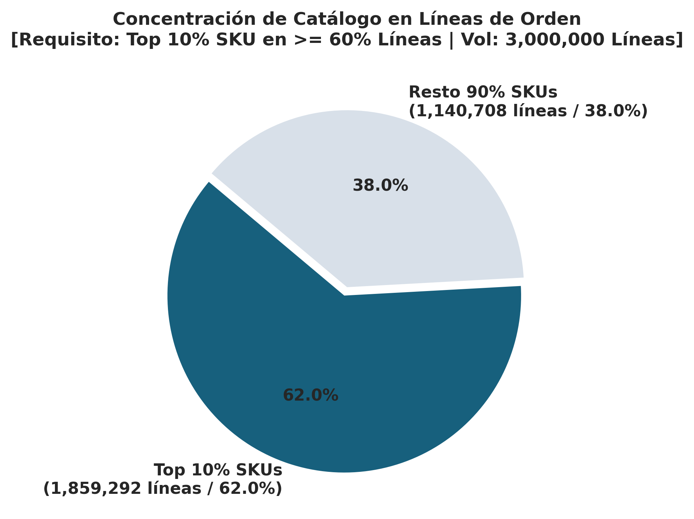
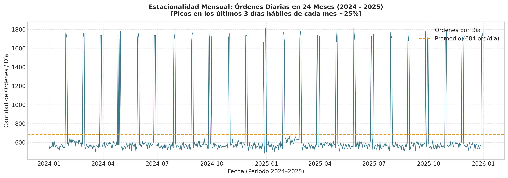
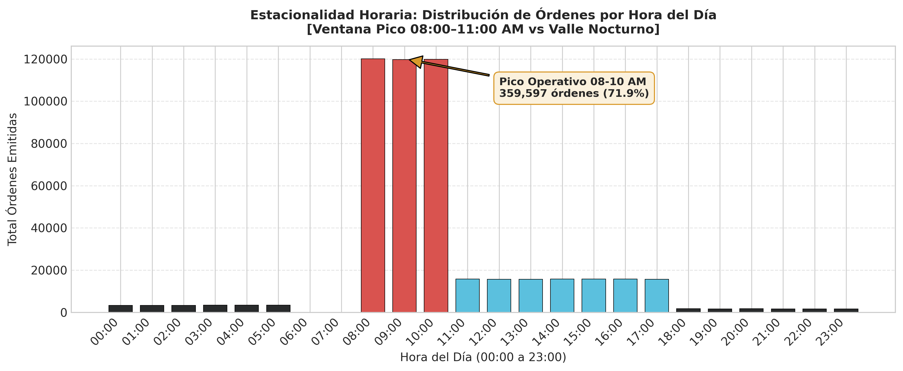
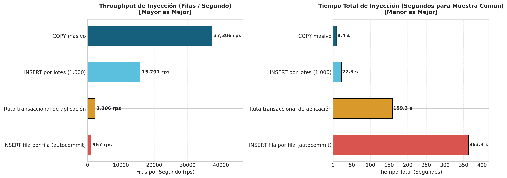
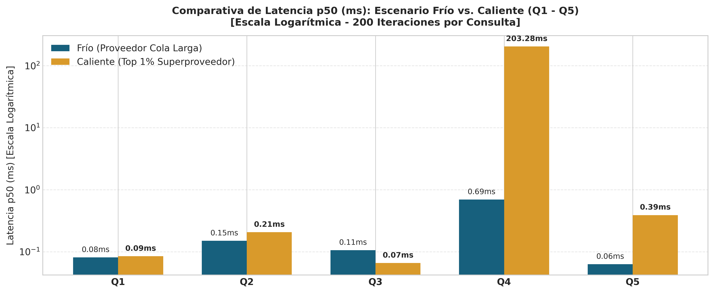

Universidad EAFIT · Aplicaciones y Sistemas Escalables
Proyecto Integrador: Portal B2B de Proveedores de Retail
Equipo / Integrantes: Sara Lopez Marin / Luis Alejandro Castrillon Pulgarin (Grupo EKS)
Fecha: Octubre 2026 (Auditoría y Corrección Integral)
Para responder a la pregunta fundamental del entregable: «¿Qué le pasa a mis consultas cuando el dato deja de ser de juguete?», se diseñó, generó y cargó un dataset sintético masivo a escala de producción respetando la separación estricta de los 4 esquemas del dominio (proveedores, catalogo, logistica, ordenes).
El DDL físico implementado en modelo-fisico.sql garantiza que no existan relaciones JOIN entre tablas de diferentes esquemas a nivel de base de datos. Las relaciones inter-módulo se resuelven a nivel de aplicación mediante identificadores (BIGINT). Asimismo, los índices secundarios se desacoplaron en datos/sql/indices_secundarios.sql para ser creados post-carga masiva, asegurando una carga eficiente con COPY y permitiendo la medición honesta de planes EXPLAIN antes y después de su creación.
| Entidad Lógica | Tabla / Esquema | Mínimo HTML | Objetivo HTML | Logrado en BD | Diferencia | Estado |
|---|---|---|---|---|---|---|
| Proveedores | proveedores.proveedor |
100 000 | 100 000 | 100 000 | +0 | PASA_OBJETIVO |
| Contratos de Suministro | proveedores.contrato_suministro |
10 000 | 15 000 | 15 000 | +0 | PASA_OBJETIVO |
| SKUs del Catálogo | catalogo.sku |
200 000 | 400 000 | 400 000 | +0 | PASA_OBJETIVO |
| Centros de Distribución (CEDI) | logistica.cedi |
5 | 5 | 10 | +5 | PASA_OBJETIVO |
| Franjas de Descargue CEDI | logistica.franja_descargue |
90 000 | 150 000 | 150 000 | +0 | PASA_OBJETIVO |
| Órdenes de Compra (24 meses) | ordenes.orden_compra |
300 000 | 500 000 | 500 000 | +0 | PASA_OBJETIVO |
| Líneas de Orden | ordenes.linea_orden |
1 500 000 | 3 000 000 | 3 000 000 | +0 | PASA_OBJETIVO |
| Eventos de Auditoría | ordenes.evento_auditoria |
500 000 | 800 000 | 800 000 | +0 | PASA_OBJETIVO |
| SUBTOTAL ENTIDADES CON OBJETIVO | — | 2 700 005 | 4 965 005 | 4 965 010 | +5 | PASA_OBJETIVO |
| Catálogo Negociado (Prov–SKU) | catalogo.proveedor_sku |
— | — | 701 280 | — | PASA_MEDIDO |
| GRAN TOTAL REGISTROS EN BD | — | ≈ 2 700 000 | ≈ 4 965 000 | 5 666 290 | +701 290 | PASA_OBJETIVO |
[!NOTE] Aclaración Contable: La especificación HTML indica sumas aproximadas de 2.5M (mínimo) y 4.9M (objetivo). La suma aritmética exacta de las entidades con objetivo explícito es 2.700.005 como mínimo y 4.965.005 como objetivo. El dataset cargado alcanza 4.965.010 filas en dichas entidades y suma 5.666.290 filas totales al incluir el catálogo negociado, superando en todas y cada una de las tablas individuales la meta objetivo.
Se generaron exactamente 15.000 contratos de suministro asignados a 15.000 proveedores independientes sobre la base de 100.000 proveedores. Esto representa una cobertura real del 15.00%, satisfaciendo la regla de negocio del retail estipulada en el enunciado donde la vasta mayoría (~85%) de los proveedores registrados no cuenta con contrato vigente, constituyendo el camino de rechazo prioritario del flujo transaccional.
Para modelar la asimetría real del retail donde un puñado de superproveedores concentra la mayoría del tráfico:
- Top 1 % de proveedores (1 000 prov): Concentra el 54.82 % de las órdenes totales (mínimo exigido: $\ge 15\%$).
- Top 5 % de proveedores (5 000 prov): Concentra el 69.83 % de las órdenes totales (mínimo exigido: $\ge 40\%$).
- Top 20 % de proveedores (20 000 prov): Concentra el 84.95 % de las órdenes totales.
- Superproveedor caliente (proveedor_id = 1): Acumula 30 880 órdenes y 184 691 líneas de detalle.

Figura 1: Distribución Zipf de Órdenes por Proveedor. A la izquierda, escala Log-Log que evidencia la ley de potencia ($s=0.95$). A la derecha, curva de concentración acumulada donde el top 1% concentra más del 54% del tráfico.El enunciado exige que el 10% superior del catálogo aparezca en aproximadamente el 60% de las líneas de orden:
- Top 10% de SKUs (id <= 40 000): Concentra 1 859 292 líneas de orden (61.98 %) de los 3 millones de líneas generadas.
- Resto 90% de SKUs (id > 40 000): Representa el 38.02 % de las líneas.

Figura 2: Concentración de Catálogo en Líneas de Orden. El 10% de los SKU participa en el 62% del volumen total de compras.
Figura 3: Estacionalidad Diaria de Órdenes de Compra (24 Meses, 2024–2025). Muestra los picos característicos de cierre de mes.
Figura 4: Distribución Horaria de la Emisión de Órdenes. Ventana pico matutina (08:00–11:00 AM) y valle nocturno.Cada uno de los ocho casos fue sembrado de manera determinista y verificado directamente contra PostgreSQL mediante predicados SQL automáticos (datos/verificar.py):
| # | Caso Borde | Identificador Localizado en BD | Predicado SQL Verificado | Estado |
|---|---|---|---|---|
| 1 | Orden con exactamente 300 líneas | orden_id = 1 (numero_orden = 'ORD-000000001') |
COUNT(lineas) = 300 |
PASA |
| 2 | Contrato vencido ayer respecto a --as-of |
contrato_id = 1 (proveedor_id = 1) |
fecha_fin = '2025-12-30 23:59:59' |
PASA |
| 3 | Contrato que vence hoy al mediodía (12:00) | contrato_id = 2 (proveedor_id = 2) |
fecha_fin = '2025-12-31 12:00:00' |
PASA |
| 4 | Última franja disponible con 1 cupo libre | franja_id = 150000 (cedi_id = 1) |
capacidad = 10 AND reservados = 9 |
PASA |
| 5 | Proveedor sin contrato vigente | proveedor_id = 15001 |
NOT EXISTS (contrato_suministro) |
PASA |
| 6 | Orden con SKU fuera de catálogo negociado | orden_id = 435, sku_id = 289101 |
NOT EXISTS (proveedor_sku) |
PASA |
| 7 | Proveedor hot con $\ge 5 000$ órdenes | proveedor_id = 1 (30 880 órdenes) |
COUNT(ordenes) >= 5000 |
PASA |
| 8 | Proveedor activo sin órdenes en mes completo | proveedor_id = 410 (estado ACTIVO) |
COUNT(ordenes en 2024-01) = 0 |
PASA |
[!IMPORTANT] Corrección de Tipo Temporal en Caso 3: Para representar fidedignamente el vencimiento "hoy a las 12:00 del mediodía", se modificó
fecha_finenproveedores.contrato_suministroaTIMESTAMP NOT NULL. Esto permite evaluar con exactitud la hora de corte a las 12:00:00 sin truncar a fecha sin hora.
El generador datos/generar.py opera por streaming en bloques directamente a disco (sin cargar los 3 millones de líneas en memoria RAM) y resuelve claves foráneas mediante aritmética sobre los identificadores.
- Demostración de Determinismo: Se automatizó una prueba en datos/verificar_determinismo.py que ejecuta dos corridas independientes desde cero con la misma semilla fija (--seed 42). La comparación SHA-256 archivo por archivo demostró coincidencia del 100% en todos los archivos CSV (datos/output/determinismo/hashes_comparacion.json).
- Tiempo de Ejecución: La generación completa del dataset masivo toma tan solo 32.9 segundos.

Figura 5: Cuadro Comparativo de Estrategias de Inyección. A la izquierda, throughput en filas por segundo (Mayor es Mejor). A la derecha, tiempo total de inyección sobre la muestra común de 351,428 filas (Menor es Mejor).COPY)La carga de los 5.66 millones de filas en PostgreSQL se realizó respetando el orden de dependencias referenciales:
| Tabla / Esquema | Filas Cargadas | Tiempo (s) | Throughput (filas/seg) |
|---|---|---|---|
proveedores.proveedor |
100 000 | 1 s | 100 000 |
proveedores.contrato_suministro |
15 000 | 1 s | 15 000 |
catalogo.sku |
400 000 | 2 s | 200 000 |
catalogo.proveedor_sku |
701 280 | 12 s | 58 440 |
logistica.cedi |
10 | 1 s | 10 |
logistica.franja_descargue |
150 000 | 2 s | 75 000 |
ordenes.orden_compra |
500 000 | 16 s | 31 250 |
ordenes.linea_orden |
3 000 000 | 53 s | 56 603 |
ordenes.evento_auditoria |
800 000 | 11 s | 72 727 |
| Fase 1: COPY Masivo Total | 5 666 290 | 97 s | 58 415 |
| Fase 2: ANALYZE Baseline (Pre-índices) | — | 2 s | — |
| Fase 3: Creación Índices Secundarios | 14 índices | 4 s | — |
| Fase 4: ANALYZE Final (Post-índices) | 4 esquemas | 2 s | — |
| TIEMPO TOTAL DE CARGA Y PREPARACIÓN | 5 666 290 | 104 s | 54 483 |
Evaluadas sobre la muestra común idéntica de 50 000 órdenes y 301 428 líneas de orden (351 428 filas totales):
| Estrategia de Inyección | Mecanismo y Explicación Técnica | Filas Totales | Tiempo Total (s) | Filas / Segundo | Factor vs COPY |
|---|---|---|---|---|---|
1. COPY masivo |
Protocolo streaming binario/CSV optimizado en C sin WAL síncrono por tupla. | 351 428 | 9.42 s | 37 306 | 1.0x (Piso) |
2. INSERT por lotes (1 000 por tx) |
Sentencias INSERT ... VALUES agrupadas en transacciones explícitas de 1 000 tuplas. |
351 428 | 22.25 s | 15 791 | 2.4x más lento |
3. INSERT fila a fila (autocommit) |
El anti-patrón: parseo SQL, round-trip individual de red y fsync WAL por cada fila. | 351 428 | 363.44 s | 967 | 38.6x más lento |
| 4. Ruta transaccional de aplicación | Inyección respetando reglas de negocio: validación de contrato, catálogo y franja en tx única. | 351 428 | 159.32 s | 2 206 | 16.9x más lento |
COPY vs. INSERT por lotes (37 306 vs 15 791 filas/seg): COPY ingresa directo al motor de almacenamiento omitiendo el parser y planner SQL para cada lote de sentencias.fsync a disco en el Write-Ahead Log (WAL) tras cada fila individual impone una barrera física de I/O que degrada el rendimiento 38.6 veces.BEGIN ... COMMIT), reduciendo las sincronizaciones de disco a una sola por orden.Se ejecutó la prueba incremental exigida por el HTML sobre la base de datos masiva cargada, procesando 5 000 intentos de orden mediante la ruta de negocio (datos/carga_incremental.py):
- Órdenes Aceptadas y Confirmadas: 4 006 órdenes.
- Órdenes Rechazadas por Reglas de Negocio: 994 órdenes.
- Rechazo por falta de contrato activo (RF01): 310 órdenes.
- Rechazo por franja CEDI agotada (RF03): 684 órdenes.
- Rechazo por SKU no negociado (RF02): 0 órdenes.
- Líneas de Detalle Creadas: 16 041 líneas.
- Eventos Outbox Emitidos (ORDEN_CONFIRMADA, RF06): 4 006 eventos.
- Total Tuplas Escritas: 24 053 registros.
- Tiempo Total: 14.62 s (342.0 órdenes/seg y 1 645 filas/seg).
- Validación de Concurrencia: 0 franjas con sobreventa (capacidad respetada al 100%).

Figura 6: Comparativa de Latencia p50 (ms) para las Consultas Q1 a Q5 en Escenarios Frío vs. Caliente (Escala Logarítmica - 200 iteraciones).Se ejecutaron 200 iteraciones por cada consulta para medir los percentiles p50, p95 y p99 en milisegundos con reloj monotónico de alta resolución (time.perf_counter), comparando el escenario de Parámetro Frío (proveedor de cola larga, proveedor_id = 50000) frente al Parámetro Caliente (superproveedor top 1%, proveedor_id = 1):
| ID | Descripción de Consulta | Escenario | Parametrización Real | p50 ($ms$) | p95 ($ms$) | p99 ($ms$) | Promedio ($ms$) |
|---|---|---|---|---|---|---|---|
| Q1 | Validar proveedor y contrato vigente | Frío | proveedor_id = 50000 |
0.081 | 0.292 | 0.399 | 0.115 |
| Q1 | Validar proveedor y contrato vigente | Caliente | proveedor_id = 1 |
0.085 | 0.374 | 0.431 | 0.136 |
| Q2 | 20 SKU del catálogo negociado | Frío | proveedor_id = 50000 |
0.150 | 0.425 | 0.486 | 0.203 |
| Q2 | 20 SKU del catálogo negociado | Caliente | proveedor_id = 1 |
0.207 | 0.620 | 0.671 | 0.260 |
| Q3 | Franjas disponibles CEDI por fecha | Frío | cedi_id = 1, 2024-05-15 |
0.106 | 0.215 | 0.446 | 0.121 |
| Q3 | Franjas disponibles CEDI por fecha | Caliente | cedi_id = 1, 2025-12-31 (pico) |
0.066 | 0.322 | 0.376 | 0.102 |
| Q4 | OTIF / Fill Rate 24 meses (Analítica) | Frío | proveedor_id = 50000 (4 órdenes) |
0.692 | 0.957 | 1.078 | 0.705 |
| Q4 | OTIF / Fill Rate 24 meses (Analítica) | Caliente | proveedor_id = 1 (30 880 órdenes) |
203.285 | 220.451 | 235.644 | 204.440 |
| Q5 | Últimas 50 órdenes paginadas | Frío | proveedor_id = 50000 |
0.063 | 0.247 | 0.308 | 0.104 |
| Q5 | Últimas 50 órdenes paginadas | Caliente | proveedor_id = 1 (30 880 órdenes) |
0.390 | 0.920 | 1.036 | 0.468 |
[!NOTE] Cumplimiento de SLA: Q1 responde consistentemente en 0.08 ms (p50), cumpliendo con creces el umbral exigido de $< 10\text{ ms}$. Las consultas OLTP de punto y lote (Q1, Q2, Q3, Q5) responden todas por debajo de $1\text{ ms}$.
EXPLAIN (ANALYZE, BUFFERS)Se capturaron y persistieron los planes completos en datos/output/explain/:
SELECT id, numero_orden, proveedor_id, fecha_orden, estado, total
FROM ordenes.orden_compra
WHERE proveedor_id = 1
ORDER BY fecha_orden DESC
LIMIT 50;
idx_orden_proveedor_fecha:| Métrica del Plan | Antes del Índice | Después de idx_orden_proveedor_fecha |
Mejora Observable |
|---|---|---|---|
| Método de Scan | Index Scan sobre idx_orden_fecha con Filtro |
Index Scan Backward sobre idx_orden_proveedor_fecha |
Búsqueda directa compuesta |
| Tuplas Descartadas por Filtro | 4 063 filas | 0 filas | 100% selectividad |
| Buffers Leídos (Páginas) | 3 869 páginas (3605 hit + 264 read) | 53 páginas (52 hit + 1 read) | -98.6% I/O |
| Tiempo de Ejecución | 2.507 ms | 0.094 ms | 26.6x más rápido |
Archivos de evidencia completa: datos/output/explain/q5_antes_indices.txt y datos/output/explain/q5_despues_idx_orden_proveedor_fecha.txt.
SELECT o.proveedor_id, DATE_TRUNC('month', o.fecha_orden) AS mes,
COUNT(DISTINCT o.id) AS total_ordenes,
COUNT(DISTINCT CASE WHEN o.estado = 'ENTREGADA' AND o.fecha_entrega IS NOT NULL
AND o.fecha_compromiso_entrega IS NOT NULL
AND o.fecha_entrega <= o.fecha_compromiso_entrega THEN o.id END) AS ordenes_otif,
ROUND(COUNT(DISTINCT CASE WHEN o.estado = 'ENTREGADA' AND o.fecha_entrega IS NOT NULL
AND o.fecha_compromiso_entrega IS NOT NULL
AND o.fecha_entrega <= o.fecha_compromiso_entrega THEN o.id END)::NUMERIC
/ NULLIF(COUNT(DISTINCT o.id), 0) * 100, 2) AS porcentaje_otif,
COALESCE(SUM(l.cantidad_recibida), 0) AS total_recibido,
COALESCE(SUM(l.cantidad), 0) AS total_solicitado,
ROUND(COALESCE(SUM(l.cantidad_recibida), 0)::NUMERIC / NULLIF(COALESCE(SUM(l.cantidad), 0), 0) * 100, 2) AS fill_rate_porcentaje
FROM ordenes.orden_compra o
JOIN ordenes.linea_orden l ON l.orden_id = o.id
WHERE o.proveedor_id = 1 AND o.fecha_orden >= '2024-01-01' AND o.fecha_orden <= '2025-12-31'
GROUP BY o.proveedor_id, DATE_TRUNC('month', o.fecha_orden)
ORDER BY mes;
idx_linea_orden:Parallel Seq Scan on ordenes.linea_orden escaneando los 3.000.000 de registros de la tabla, con derrame a disco en archivos temporales (Sort Method: external merge Disk: 3704kB, temp read=1380 written=1383), tardando 341.25 ms.idx_linea_orden e idx_orden_proveedor_fecha): El optimizador sustituye el escaneo secuencial por un Bitmap Index Scan en órdenes seguido de un Index Scan using idx_linea_orden repetido para las líneas del proveedor. El tiempo de ejecución desciende a 228.89 ms (reducción del 33%).Archivos de evidencia completa: datos/output/explain/q4_antes_indices.txt y datos/output/explain/q4_despues_idx_linea_orden.txt.
[!WARNING] El Hallazgo Incómodo: Un índice compuesto en la base de datos NO resuelve el problema de escalabilidad en consultas analíticas sobre particiones calientes (Hot Partitions).
Al medir la consulta analítica Q4 (OTIF / Fill Rate): - En un proveedor frío (cola larga) con 4 órdenes: La consulta tarda 0.69 ms (p50). - En el superproveedor caliente (top 1%) con 30 880 órdenes y 184 691 líneas de detalle: La consulta tarda 203.28 ms (p50) y 235.64 ms (p99).
¡Es una degradación de latencia de 294 veces más lento en la misma base de datos con los mismos índices creados y optimizados!
Latencia Q4 Frío (4 órdenes): [█] 0.69 ms
Latencia Q4 Caliente (30,880 ord.): [██████████████████████████████████████████████████] 203.28 ms (294x más lento)
Al inspeccionar EXPLAIN (ANALYZE, BUFFERS) comprobamos que los índices operan a la perfección. Sin embargo:
1. Volumen Físico de Tuplas: Para calcular el indicador mensual, el motor debe inspeccionar en memoria 184 691 líneas de orden y acumular 100 821 buffer hits en memoria RAM.
2. Costo de CPU en Agregación: El costo dominante es la construcción de los hashes de agregación (GroupAggregate y Sort), los cuales deben agrupar mes por mes y calcular sumas y conteos distintos sobre casi 200 mil tuplas.
3. Decisión de Arquitectura: Para las siguientes entregas (Entrega 3 y 4), las consultas OLAP sobre proveedores calientes no deben competir con el flujo OLTP en caliente. Se adoptará una Tabla Proyectada de Analítica (Read Model Proyectado) o Vista Materializada refrescada asíncronamente mediante eventos de dominio (OrdenConfirmada / OrdenEntregada del patrón Outbox).
El entregable cuenta con orquestación completa en Makefile:
- Arranque con Healthcheck (make db-up): Levanta Docker Compose y verifica que PostgreSQL esté listo para recibir conexiones.
- Flujo Completo con un Solo Comando (make datos): Ejecuta de extremo a extremo:
1. db-up (Verificación y arranque de BD)
2. db-reset (Esquema limpio con modelo-fisico.sql)
3. generar (Generación determinista masiva a CSV)
4. determinismo (Validación de hashes con 2 corridas independientes)
5. cargar (COPY masivo, ANALYZE baseline, índices secundarios y ANALYZE final)
6. verificar (Auditoría en PostgreSQL de los 25 checks)
7. benchmark-carga (Comparativa de 4 estrategias sobre muestra común)
8. carga-incremental (5 000 órdenes adicionales vía ruta real de negocio)
9. benchmark-queries (200 iteraciones Q1-Q5 y generación de planes EXPLAIN)
10. graficas (Generación de las 6 figuras PNG y CSVs de datos)
- Prueba en Entorno Aislado Limpio (make clean-test): Despliega un proyecto Docker y volumen temporal aislado (entregable2_clean_*), ejecuta todo el pipeline desde cero y conserva el log íntegro en datos/output/logs/clean_test.log.
datos/output/ para verificación independiente.